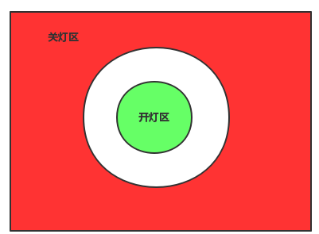

slackbot 框架¶
来源: https://pengzhangdev.github.io/slackbot/
slackbot, 顾名思义, 是基于slack的bot程序, 使用python实现. 个人在lins05/slackbot的基础上, 进行了二次开发,用于树莓派的控制中心和智能家居的控制中心. 最初选中它的原因是, 在网上看到大量的例子基于slack做远程运维的例子.
下文介绍的slackbot框架, 是包含lins05/slackbot和个人二次开发之后的内容.二次开发的核心在于插件和组件扩充.
由于用了插件和组件的模式, 导致可以添加任意多功能的插件和组件. 所以, 功能还在持续开发中.
计划: 插件和组件跟python-fire结合, 期望实现自动解析组件的接口, 而不需要专门封装插件.
框架图¶

该模式是典型的生产者消费者模型, 生产者有2个, 一个是从slack官网接收消息并放入队列, 另一个是定时任务,隔一定时间往队列中存入指令. 消费者有10个(10线程等待在队列上), 其功能就是分别处理定时任务, 各种消息.
插件类是由PluginManager管理和加载, 从插件目录中根据配置文件中的规则加载指定的插件类, 并根据插件类的修饰函数获取对应的处理函数(定时处理函数, 消息处理函数).
插件和组件的实现¶
由于使用了修饰函数, 则被调用函数无法是类成员函数. 虽然在写插件上更方便, 但是对于插件功能强大的实现, 则需要额外封装.
在此基础上, 新添加了组件概念, 组件可以是任意的第三方库或实现(纯面向对象实现), 然后在插件目录下实现对应的插件调用该组件组成功能. 这就是pi上智能家居控制中的基础. 后续的控制实现都在该基础上扩展, 特别是定时任务.
组件中会出现多个模块被不同插件调用的场景, 这就需要组件实现单例模式(组件初始化参数通过配置文件指定). 单例模式的实现,在python2和python3上不同, 由于目前全体切换到python3上, 实现上使用了metaclass, 但是实际上重写new方法的实现也是可以的. 特别注意, 单例实际上是直接返回了内存对象, 但依然会继续后续的__init__, 所以必须添加标记来表示已经初始化变量.
插件列表¶
智能家居的主控为homeassistant, 这是一个开源的框架, 并且支持开源协议, 小米系列和yeelight系列大部分都能直接添加, 少量需要hack下.
所有智能家居模块存放在 component/ha/, slackbot与homeassistant通过rest API 通信. 所有的请求都是slackbot请求发起.
所有的智能家居设备都可以通过slackbot远程控制开关.
后面列出的是组件列表, 列表中组件组合不同可以产生不同的插件, 比如:
- 日照状态 + 家庭人员在客厅状态 + 灯具控制 = 太阳下山客厅有人自动开灯, 客厅没人自动关灯
- 小米扫地机器人 + 家庭人员在客厅状态 = 家里没人, 且定时任务到, 自动开始扫地
- 录制模块 + 播放模块 + 语音转文字模块 + 文字转语音模块 = 跟神经冰聊天并发布任务的功能
homeassistant提供的功能列表¶
家庭人员在家状态¶
获取家庭人员是否在家, 该实现其实是检测家庭成员手机的mac地址判断是否连接上路由器.
灯具控制¶
远程控制指定灯具的开关
小米扫地机器人¶
接入小米扫地机器人, 默认每周一三五启动清扫, 但24小时内不重启启动清扫.
日照状态¶
也就是太阳下山与否的状态.
家庭人员在客厅状态¶
该状态的存在意义是, 个人期望家庭成员在客厅时, 自动打开客厅灯, 离开客厅时, 自动关闭客厅的.
在初期学习阶段, 解除到的主要有蓝牙广播和RFID, 都是通过三点法来定位(相关信息可以百度室内定位). 首先, 基于芯片的定位(仓库定位)不适合家庭使用, 因为家庭不可能会带着射频芯片.而蓝牙广播只有接收端才能知道自己与发送端的距离(信号衰减), 且需要三个蓝牙定位. 考虑到与蓝牙类似, 但收到环境影响更大的wifi, 测试小米路由器上可以获取到目标手机的信号强度, 则决定改用wifi划定两个圆弧区域. 小圆弧区域内开灯, 大圆弧区域外关灯, 而两个圆弧区域中间保持原状态不变.

聊天机器人¶
分别有 ibot, tuling, xiaoi, emotibot. 但不是所有的都启用, 在聊天插件中, 选择其中的一个启动并交互.
文件管理器¶
所谓的文件管理器, 只是一个文件索引加上文件查找的工具, 额外增加了一个文件上传的功能. 文件索引使用的是jieba和whoos. 可以通过slackbot快速查找某个文件或者某本书(电子书多到自己也不知道有多少本).
追剧模块¶
不只是追剧, 也是追电影. 电影豆瓣7.0以上才推送, 而剧是家里政委喜欢的日剧, 全推((⊙﹏⊙)b),后来因为某些比较无奈的原因, 这货开始推一些老家里政委喜欢的剧, 就按需加了个功能, 黑白名单. 果然老婆是第一生产力.
小说模块¶
其实就是一个爬虫, 不停地爬取指定小说判断是否存在更新. 在个人的主页介绍中介绍了喜欢历史小说, 所以大部分都是历史类小说
播放模块¶
调用mplayer播放
录制模块¶
调用arecord录音
语音转文字¶
用了百度的api
文字转语¶
用了iflytek的API, 不得不说它们家语音做得好, 各种人物可选.
工具¶
包含了模仿浏览器打开的代码(cookie等), 实现了代理池, 并可代理访问.